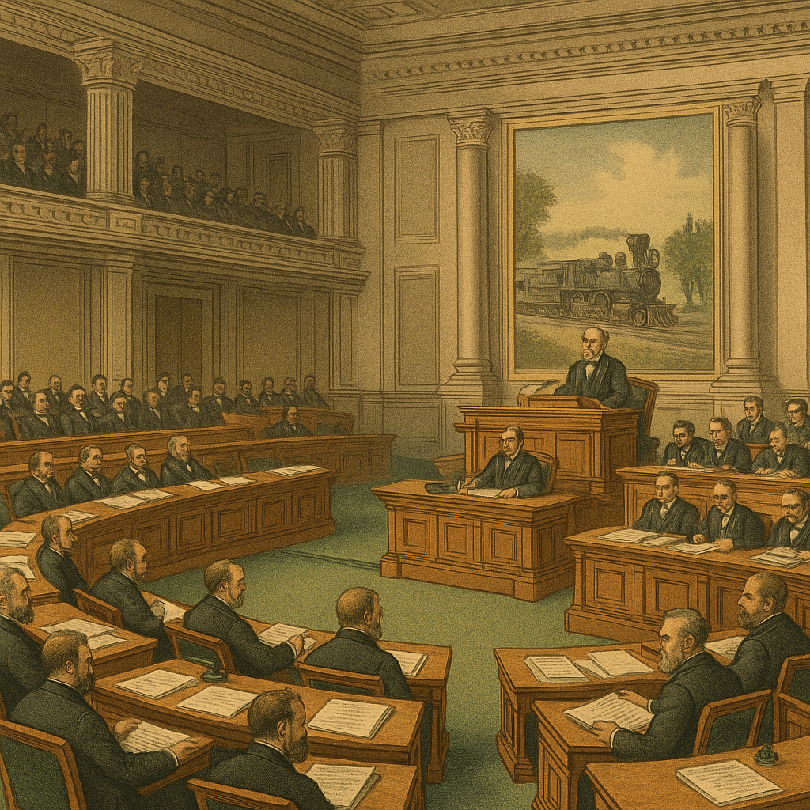

The legal framework around railroads reflected the balance of progress and public accountability.
Legislation played a pivotal role in shaping the growth and regulation of American railroads. The Pacific Railway Act of 1862 was a landmark policy, granting the Union Pacific and Central Pacific Railroad companies massive land subsidies and government bonds to incentivize construction of the first transcontinental railroad. This act signified the federal government's commitment to internal improvements and westward expansion.1 This further demonstrates the lasting importance of railroads in shaping America's development and its broader economic landscape. These technological and regulatory advancements had far-reaching implications not only for the growth of the railroad industry, but also for American society, economy, and labor dynamics as a whole. They represent the intersection of industrial ambition and national progress during a pivotal era of expansion.
In the decades following the railroad boom, concerns about monopolistic practices and unfair pricing led to the introduction of the Interstate Commerce Act in 1887. This legislation created the Interstate Commerce Commission (ICC), the first federal regulatory agency, to oversee fair rates and prevent discriminatory practices by railroad companies. It marked the beginning of federal oversight over private enterprise and set a precedent for future regulatory bodies.2 This further demonstrates the lasting importance of railroads in shaping America's development and its broader economic landscape. These technological and regulatory advancements had far-reaching implications not only for the growth of the railroad industry, but also for American society, economy, and labor dynamics as a whole. They represent the intersection of industrial ambition and national progress during a pivotal era of expansion.
Other legislative measures addressed worker safety, standardization of track gauge, and the rights of laborers. These regulations attempted to balance the enormous economic benefits of the railroads with public interest and ethical business practices. Railroad law thus reflects a broader narrative about American capitalism, regulation, and the evolving role of government. This further demonstrates the lasting importance of railroads in shaping America's development and its broader economic landscape. These technological and regulatory advancements had far-reaching implications not only for the growth of the railroad industry, but also for American society, economy, and labor dynamics as a whole. They represent the intersection of industrial ambition and national progress during a pivotal era of expansion.
- U.S. National Archives and Records Administration. “Treasures of Congress: The Pacific Railway Act.” https://www.archives.gov/exhibits/treasures_of_congress/text/page15_text.html
- Penn State University Libraries. The History and Evolution of the American Railroad. ScholarSphere. https://s3.amazonaws.com/.../The_History_and_Evolution_of_the_American_Railroad.pdf
Laws like the Interstate Commerce Act marked a turning point where government began to challenge monopolies and protect public interest amid rapid growth.
Laws like the Interstate Commerce Act marked a turning point where government began to challenge monopolies and protect public interest amid rapid growth.